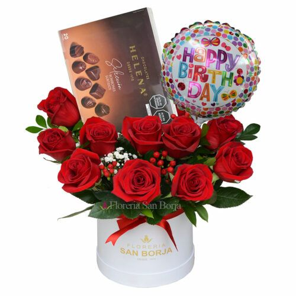

Detalles personalizados
Combinaciones únicas con flores de temporada, globos o chocolates según tu elección
Ver fotosInicio/Ramos y detalles personalizados
Flores, globos y chocolates en perfecta combinación, creados a tu medida con amor y devoción